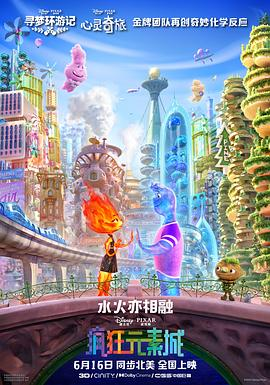

疯狂元素城 / Elemental
又名：元素世界 / 元素大都会(港) / 元素方城市(台)
非常脑洞大开的设定，很多惊喜的小创意，比如说Fire的first-aid kit是木头，连片尾字幕都是满满的小设计，非常用心！剧情依然是中规中矩的迪士尼/皮克斯风格，我很吃这一套，最后的鞠躬甚至有点泪目。看完之后又看了幕后花絮，原来America-Born-Korean导演的一生都是这部作品的灵感啊，respect，和之前得Turning Red很类似。主题曲音乐不知为啥非常耳熟，可能是我电影看得太晚了。总之十分推荐！
作品信息
| 导演 | 彼得·孙 |
| 编剧 | 约翰·霍伯格 / 凯特·李克尔 / 布兰达·薛 / 彼得·孙 |
| 主演 | 莉娅·刘易斯 / 马莫多·阿西 / 罗纳尔多·德尔·卡门 / 希拉·沃索夫 / 温迪·麦丽登·康薇 / 凯瑟琳·奥哈拉 / 梅森·韦特海默 / 乔·佩拉 / 马修·杨·金 / 罗诺比尔·拉希瑞 / 伊诺森特·埃卡基蒂 / 卡拉·林·丁 / 杜采融 / 杰夫·拉彭西 / 本·莫里斯 / 威尔玛·博尼特 / P·L·布朗 / 乔纳森·亚当斯 / 亚历克丝·卡普 / 阿萨夫·科恩 / 杰西卡·迪西可 / 特丽·道格拉斯 / 凯伦·惠伊 / 阿里夫·S·金成 / 斯科特·门维尔 / 阿丽莎·穆拉里 / 弗雷德·塔特西奥 / 凯瑞·华格伦 |
| 类型 | 剧情 / 喜剧 / 科幻 / 动画 / 奇幻 / 冒险 |
| 制片国家/地区 | 美国 |
| 语言 | 英语 |
| 上映日期 | 2023-06-16(美国/中国大陆) / 2023-05-27(戛纳电影节) |
| 片长 | 102分钟 |
| IMDb | tt15789038 |
说过什么
2024-01-14 21:43:41
看过 · 时间来自广播，短评来自标记页
非常脑洞大开的设定，很多惊喜的小创意，比如说Fire的first-aid kit是木头，连片尾字幕都是满满的小设计，非常用心！剧情依然是中规中矩的迪士尼/皮克斯风格，我很吃这一套，最后的鞠躬甚至有点泪目。看完之后又看了幕后花絮，原来America-Born-Korean导演的一生都是这部作品的灵感啊，respect，和之前得Turning Red很类似。主题曲音乐不知为啥非常耳熟，可能是我电影看得太晚了。总之十分推荐！
2022-12-29 21:40:18
广播 · 想看
最后一次看到是 2026-08-01T11:04:29+10:00 · 豆瓣原页